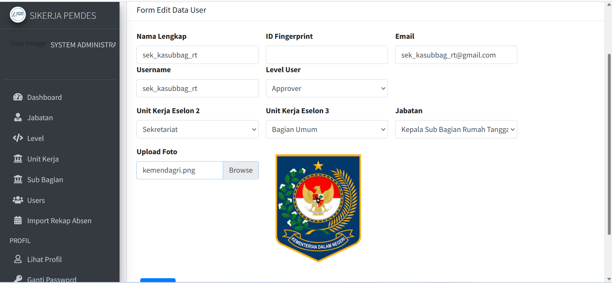
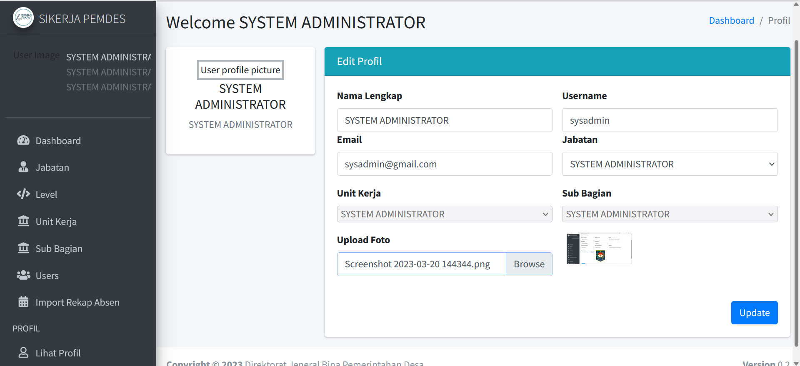
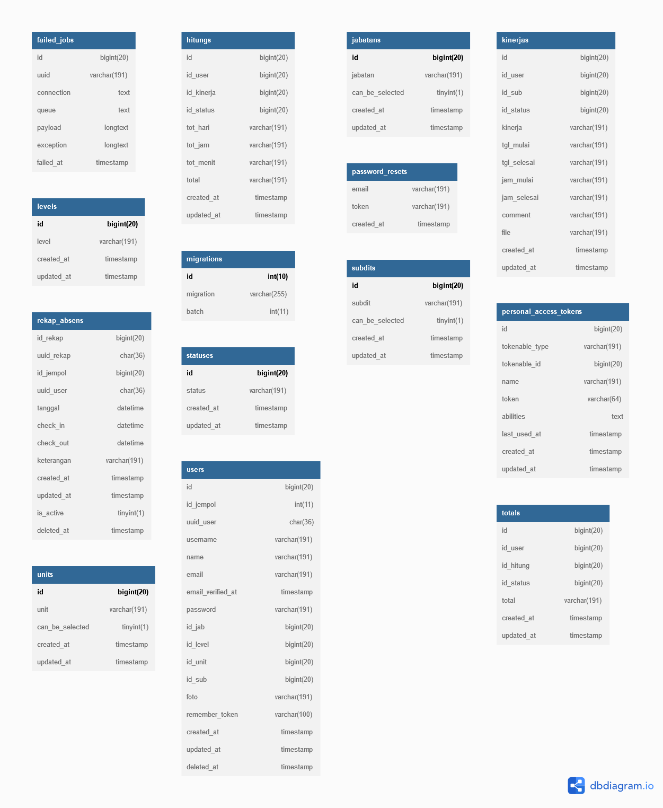

Sikerja OS
A simple website for reporting assessments and accountability for daily employee performance




This website is used to input the daily performance of outsourced employees within the Directorate General of Village Government Development. Employees must input performance every day and performance hours will be calculated and must reach the minimum target of monthly working hours.
I was entrusted by the head of the general section of the Directorate General of Village Government Development to create a website for inputting the performance of outsourced employees in the office. The head of the general department wants to be able to control each employee so that they work according to the performance targets that have been set. This is also supported by the desire of the leadership of each employee who wants to hold each employee accountable through administration so that everything can be realized on target and according to expectations. For this reason, this system is needed by adopting the system that already exists at the Ministry of Home Affairs for assessing the performance of civil servants through the Ministry of Home Affairs' Sikerja website. I feel like I need help from my IT colleagues in building this website, because it is quite complex and especially in the backend development section. I took part in web pioneering, namely design and blueprints and some data processing that I could do and my more experienced IT friends helped in the process of calculating data to be displayed on the dashboard. Ultimately, this website is part of the IT team of the Directorate General of Village Government Development.
After a long journey, this website was finally successfully built by us. I learned a lot about working in a team, I started learning to work with Trello and Gith. Apart from that, I also finally understand many things related to more complex and native PHP processes, considering that I started everything with a framework.
Unfortunately, when this website was finished and ready to use, bureaucracy in the office meant that it could not be published. There are many things that have to be taken care of regarding coordination with the Director General and Directors and other leaders which makes everything hampered as well as related to budget allocation and several other interests. In the end, this project was not published.
Computer Specialist (Pranata Komputer – First Expert Level) Ministry of Home Affairs, Indonesia

Erma Yuli Clara Saragih
Project information
- Category Web Development
- Client Head of the General Section of the Directorate General of Village Government Development
- Project date 01 Feb, 2023